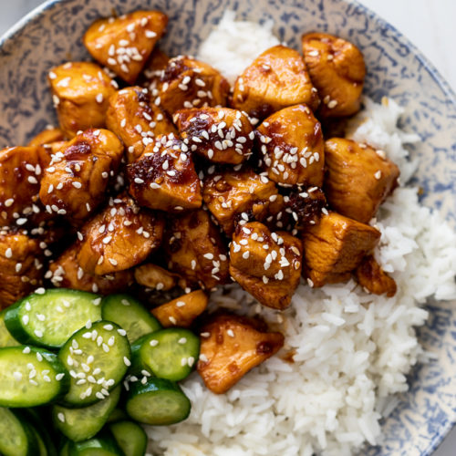

Homepage
Tender Teriyaki Chicken
Preparation time
30 minutes
Cooking time
45 minutes

You will need!
- 125ml soy sauce
- 3 Tbsp brown sugar
- 1 Tbsp water
- 1 clove garlic, minced
- 1 tsp grated fresh ginger
- 2 Tbsp cooking oil, divided
- 2 boneless, skinless chicken thighs
Method
- Prepare the marinade first. Stir together the soy sauce, brown sugar, water, garlic, ginger, and 1 Tbsp of the cooking oil in a bowl.
- Place the chicken in a shallow bowl or dish, then pour the marinade over top. Turn the chicken a couple of times to make sure it's well coated. Let the chicken marinate for 30 minutes to one day (refrigerated), turning the chicken occasionally as it marinates.
- When ready to cook the chicken, heat the remaining 1 Tbsp cooking oil in a large skillet over medium heat. Once hot, add the chicken, discarding the remaining used marinade.
- Cook the chicken for about 5-7 minutes on each side or until cooked through and the liquid in the skillet has reduced to a light coating of glaze on the chicken.
- Transfer the chicken to a cutting board and let it rest for about 5 minutes before slicing and serving.